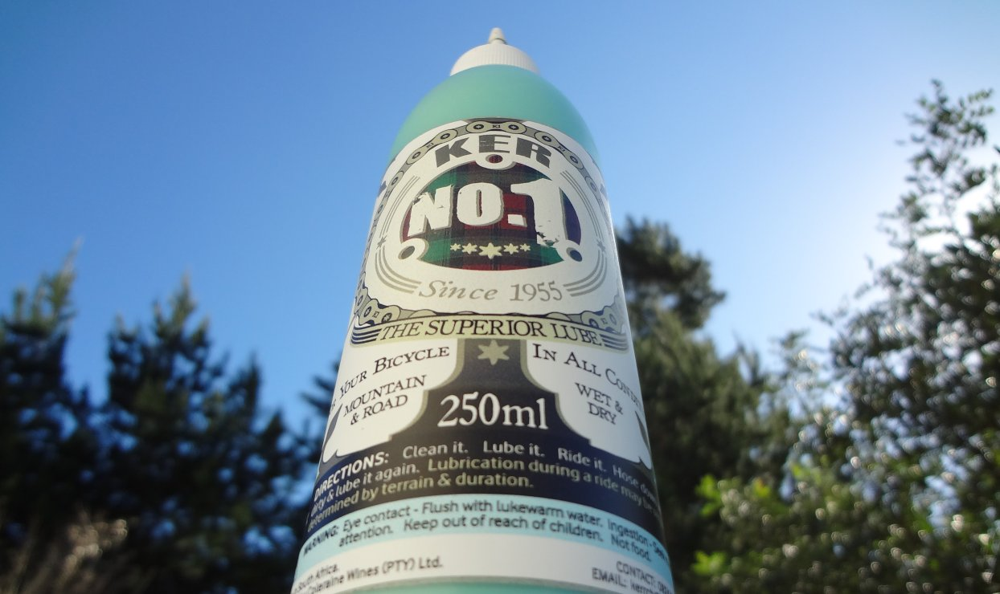
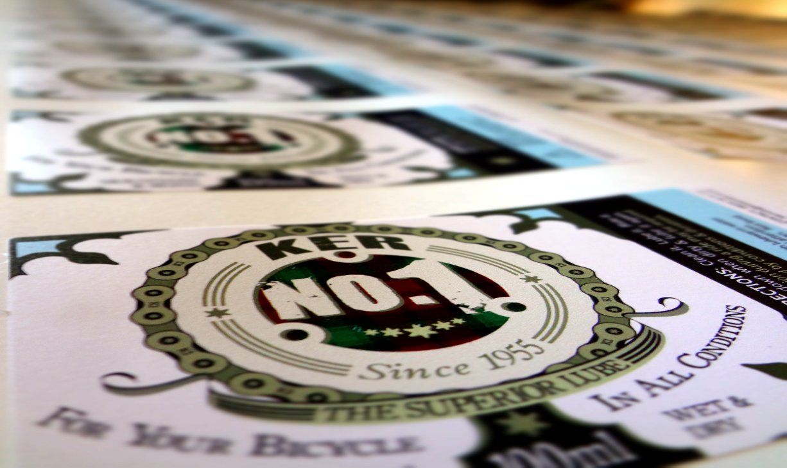
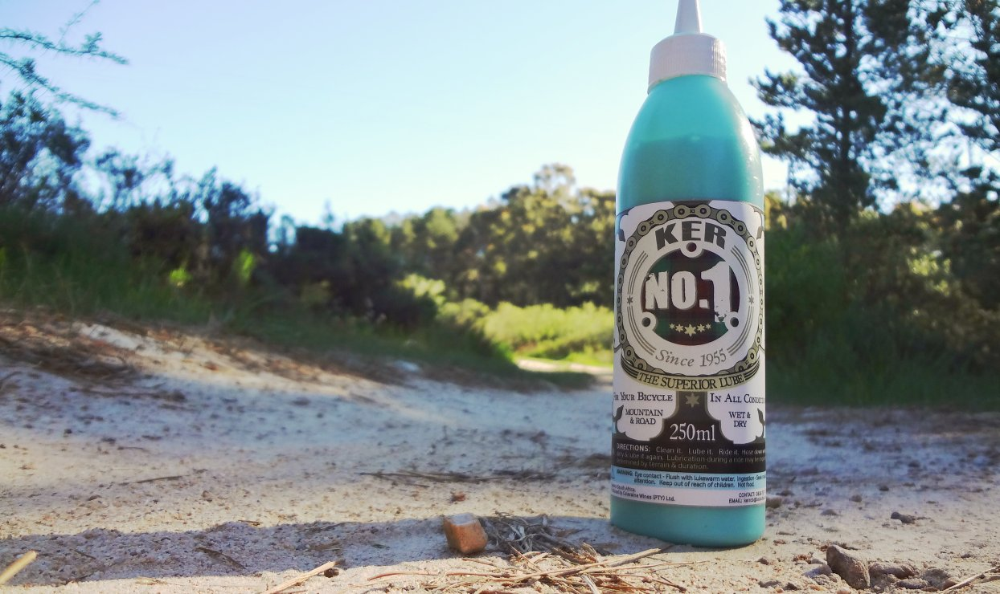

KER No.1TM, All Conditions Bicycle Chain Lubrication — a product developed by Clive Kerr — wine-maker, mountain bike enthusiast, practical mind and descendant from the Kerr clan of Scotland.
Out in the remote location where Clive resides, his attitude of "if you need it, just make it with what you have" delivered the solution when the squeak of a dusty chain disturbed the joy of mountain biking in the unexplored paradise on his doorstep. Rigged up and ready to ride, it was no option to drive 80km for lube from the shop.
The logical fix — instantly think up a recipe for highly effective chain lube, quickly mix it with ingredients readily available. Lube it. Ride it.

Excited about discovering the superior qualities of his brew, Clive soon decided to refine and bottle the chain juice, slap on a label and share the benefits of KER No.1TM, All Conditions Bicycle Chain Lubrication.

Features in the design of the KER No.1TM label involved Clive's roots to the Scottish heritage seen in the tartan of his clan; the lug work patterns as were crafted on the bicycles of the old heros; and a defining golden chain element wrapped around a chain ring — for emphasising the key purpose of the product — protection of your drive train.
Ready to get cranked into motion!
